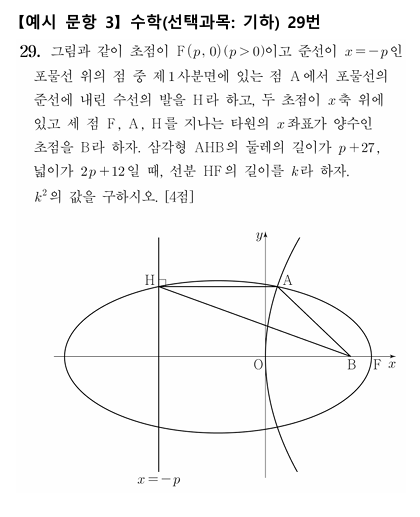

아니 이게 고등학생 수준 문제라고??
이과 출신인데 뭔소리인지 하나도 모르겠다

아니 이게 고등학생 수준 문제라고??
이과 출신인데 뭔소리인지 하나도 모르겠다
저런 수능 문제들 특징은 그림에 현혹되면 안됨.
문제에서도 구하라는게 HF라고 하고는 있지만,
결국 저기서 다른 조건만 동일하게 성립하면 B를 F자리로 옮겨서 계산해도 됨.
식으로 전부 계산하면 되긴 하지만,
보통 저런 도형그림 있는 문제들은 똑같은 조건이 성립하는걸 빠르게 계산해서 넘어가는 것도 중요함.
삼각형 면적 나왔고, 몇개 선분 길이도 나왔으니 피타고라스 적용해서 k^2 구할 수도 있는 거지.
대박이네.. 박사하고 포닥에 아직도 연구만 하고있는데, 지금 수능보면 7등급 나올듯?
난 분명히 기벡 배웠는데 포물선에 대해선 기억나는게 왜 없지 ㄷㄷ
공간도형(정사영)은 기억에 나고 시험도 괜찮게 봤는데
정답! 4번!